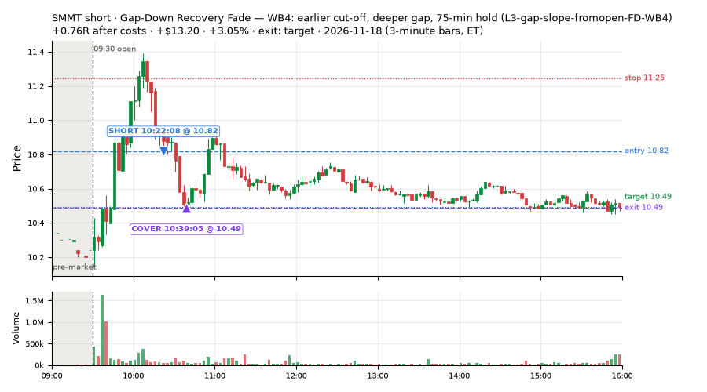
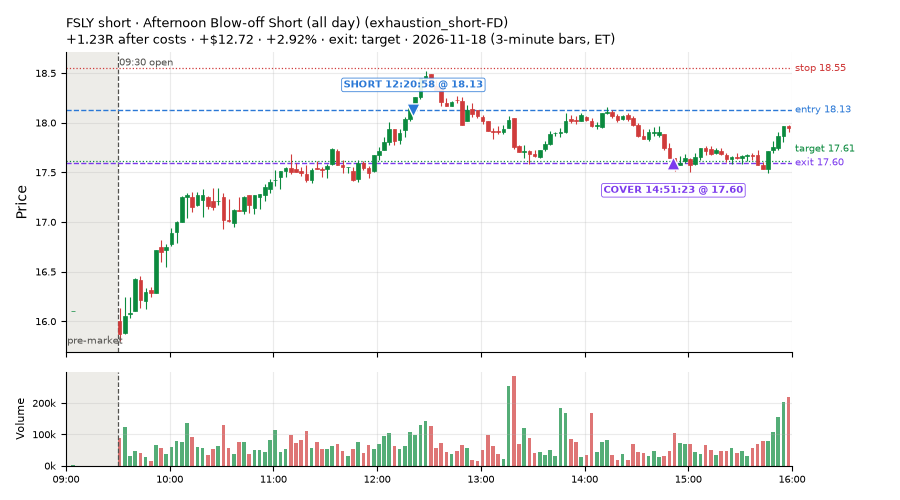
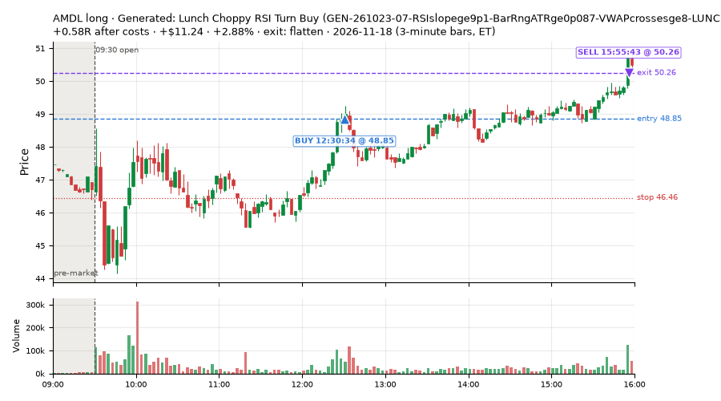
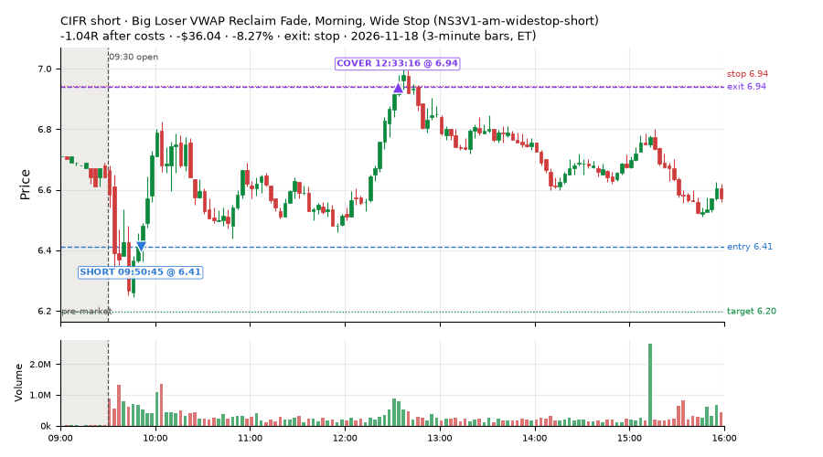
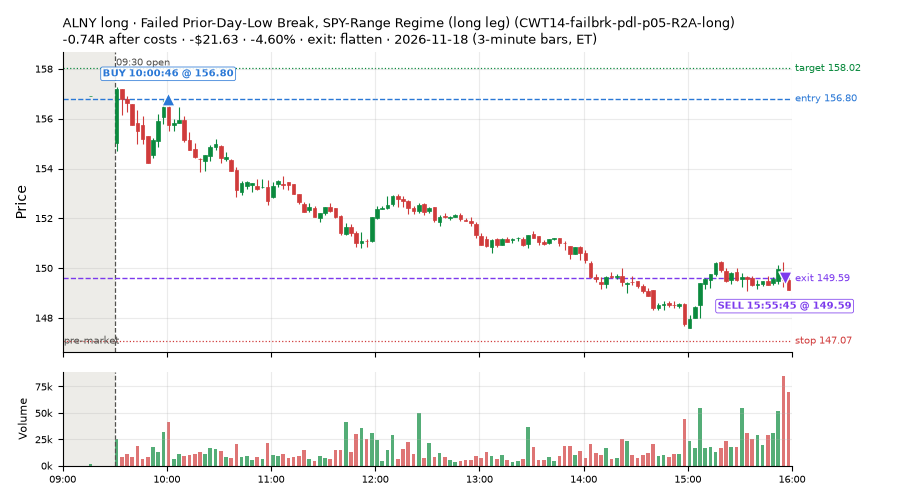
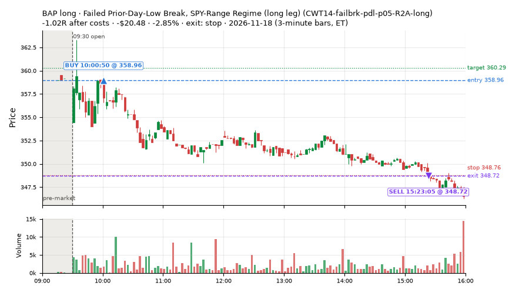
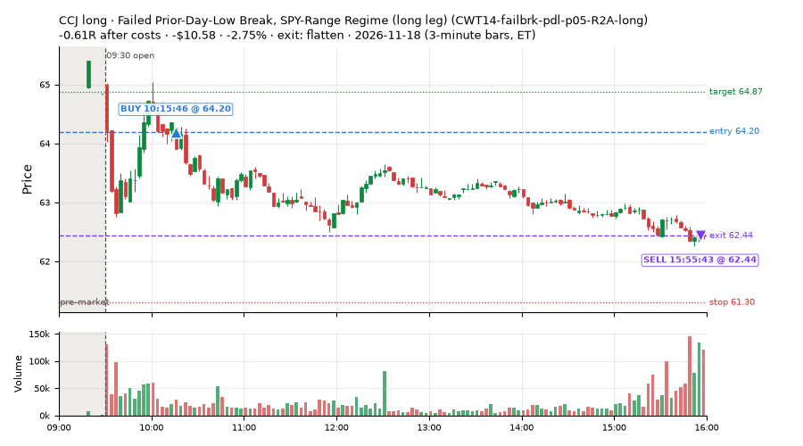
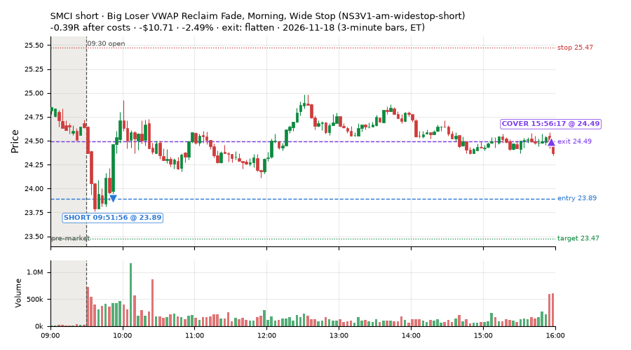

266 trades · win rate 47% · P/L $-251.83
PROBATION: no live setup has passed both locked test periods. 10 owner-directed setups added 2026-10-08 (MarcoFlow top 5 + 5 new), untested live. RW6G1 (RW6 + VWAP band guard) added 2026-10-09, probation.

| Symbol | Setup | Side | In | Out | Entry | Exit | Exit reason | % gained | P/L |
|---|---|---|---|---|---|---|---|---|---|
| SMMT | Gap-Down Recovery Fade — WB4: earlier cut-off, deeper gap, 75-min hold (L3-gap-slope-fromopen-FD-WB4) | short | 10:22 | 10:39 | 10.82 | 10.49 | target | +3.05% | $13.20 |
| FSLY | Afternoon Blow-off Short (all day) (exhaustion_short-FD) | short | 12:20 | 14:51 | 18.13 | 17.60 | target | +2.92% | $12.72 |
| AMDL | Generated: Lunch Choppy RSI Turn Buy (GEN-261023-07-RSIslopege9p1-BarRngATRge0p087-VWAPcrossesge8-LUNCH-BRvwgt0p7-hold-long) | long | 12:30 | 15:55 | 48.85 | 50.26 | flatten | +2.88% | $11.24 |
| Symbol | Setup | Side | In | Out | Entry | Exit | Exit reason | % lost | P/L |
|---|---|---|---|---|---|---|---|---|---|
| CIFR | NS3V1-am-widestop-short | short | 09:50 | 12:33 | 6.41 | 6.94 | stop | -8.27% | $-36.04 |
| ALNY | CWT14-failbrk-pdl-p05-R2A-long | long | 10:00 | 15:55 | 156.80 | 149.59 | flatten | -4.60% | $-21.63 |
| BAP | CWT14-failbrk-pdl-p05-R2A-long | long | 10:00 | 15:23 | 358.96 | 348.72 | stop | -2.85% | $-20.48 |
| CCJ | CWT14-failbrk-pdl-p05-R2A-long | long | 10:15 | 15:55 | 64.20 | 62.44 | flatten | -2.75% | $-10.58 |
| SMCI | NS3V1-am-widestop-short | short | 09:51 | 15:56 | 23.89 | 24.49 | flatten | -2.49% | $-10.71 |








Signal to fill: median 1s, 90th percentile 3s (266 trades). Bars close each minute; the order follows the bar close.
Best excursion (MFE): median 0.26R; worst (MAE) median 0.51R. 49% of trades never got +0.25R in our favour; 1 reached +1R and still closed at or below 0.
| Symbol | Setup | Best R | Worst R | Closed R |
|---|---|---|---|---|
| UNH | CWT13-vwapstretch-z05-long | +1.07 | -1.72 | -1.21 |
| WEC | NM-MF3-qqqdn-gapdn-FD | +0.96 | -1.01 | -1.13 |
| WEC | MF5-flowsell-vwapup-rsi5hi | +0.94 | -1.01 | -1.13 |
| SITE | CWT14-failbrk-pdl-p10-long | +0.89 | -1.03 | -1.10 |
| ZS | exhaustion_short-FD | +0.67 | -1.13 | -1.13 |
| Entry time | Trades | Win | Avg R | P/L |
|---|---|---|---|---|
| 09:50-10:30 | 92 | 59% | -0.19 | $-110.44 |
| 10:30-11:30 | 55 | 51% | -0.04 | $9.47 |
| 11:30-13:00 | 87 | 34% | -0.36 | $-129.11 |
| 13:00-14:00 | 21 | 33% | -0.19 | $-12.71 |
| 14:00-16:00 | 11 | 45% | -0.13 | $-9.04 |
| Setup | Trades | Win | Avg R after costs | Adj R (net of SPY) | Avg R ex-market (all sessions) | P/L |
|---|---|---|---|---|---|---|
| Stretched Below VWAP Bounce (CWT13-vwapstretch-z05-long) | 13.0 | 69% | +0.10 | -0.06 | +0.00 (beta +1.42, n 334) | $12.22 |
| Stretched Above VWAP Fade (far) (CWT13-vwapstretch-z075-short) | 2.0 | 50% | +0.23 | +0.32 | -0.02 (beta -0.10, n 27) | $2.07 |
| Failed Prior-Day-Low Break, SPY-Range Regime (long leg) (CWT14-failbrk-pdl-p05-R2A-long) | 53.0 | 62% | -0.04 | -0.05 | -0.03 (beta +0.42, n 366) | $-15.33 |
| Failed Prior-Day-Low Break Long (CWT14-failbrk-pdl-p10-long) | 61.0 | 59% | -0.19 | -0.15 | -0.10 (beta +1.09, n 870) | $-38.22 |
| Generated: Open VWAP Reclaim Buy (down stock) (GEN-261019-01-VWAPxUp-ATRdge3p6-FromPCATRlem0p68-OPEN-BRvwgt0p7-t05s05-long) | 5.0 | 0% | -1.16 | -1.07 | -1.14 (beta +0.16, n 5) | $-18.61 |
| Generated: Lunch Choppy RSI Turn Buy (GEN-261023-07-RSIslopege9p1-BarRngATRge0p087-VWAPcrossesge8-LUNCH-BRvwgt0p7-hold-long) | 33.0 | 9% | -0.59 | -0.28 | +0.20 (beta +2.94, n 33) | $-59.49 |
| Generated: Open Failed-Breakdown Short (GEN-261026-04-ORBfailDn-Ret15mlem0p55-SMA50dlem0p3-OPEN-BRvwgt0p5-holdtr-short) | 9.0 | 67% | +0.02 | -0.09 | -0.26 (beta -1.71, n 9) | $-1.86 |
| Generated: Midday Spike Fade (SPY down) (GEN-261028-07-Z12ge1p6-Eff6le0p034-MID-SPYltm0p25-hold-short) | 7.0 | 14% | -0.71 | -0.49 | -0.28 (beta -0.99, n 14) | $-20.92 |
| Gap-Down Recovery Fade — WB4: earlier cut-off, deeper gap, 75-min hold (L3-gap-slope-fromopen-FD-WB4) | 6.0 | 67% | +0.30 | +0.32 | +0.02 (beta +1.07, n 14) | $34.61 |
| Early Sellers, Mid-High RSI (all day) — WB3: skip rising 20-SMA / gap-ups > 2% + RSI 55-62 + heat -40..-30 + ADV $150M (MF2-open-rsimidhi-flowsell-FD-WB3) | 2.0 | 0% | -1.17 | -0.73 | -0.68 (beta -2.11, n 22) | $-4.72 |
| Early Sellers, Strong Heat (MF4-h40-open-flowsell) owner-directed; holdouts once: Sep-Oct -0.117R n147, Apr-Jun -0.017R n735 | 7.0 | 57% | +0.02 | +0.01 | -0.24 (beta -0.97, n 19) | $6.06 |
| Sellers into Strength (all day) (MF5-flowsell-vwapup-rsi5hi) owner-directed; holdouts once: Sep-Oct -0.001R n264, Apr-Jun -0.010R n1199 | 7.0 | 57% | +0.15 | +0.14 | +0.11 (beta -0.57, n 60) | $2.62 |
| Early Sellers into a Pop (index down, no gap up) (near-miss) (NM-MF3-qqqdn-gapdn-FD) | 9.0 | 33% | -0.42 | -0.21 | -0.09 (beta -1.15, n 56) | $-22.68 |
| Big Loser VWAP Reclaim Fade, Morning, Wide Stop (NS3V1-am-widestop-short) | 22.0 | 41% | -0.08 | -0.08 | -0.19 (beta -0.18, n 82) | $-63.65 |
| Afternoon Blow-off Short (all day) (exhaustion_short-FD) | 30.0 | 37% | -0.34 | -0.37 | -0.12 (beta -0.88, n 162) | $-63.93 |
Market direction (SPY, beta 1) accounted for $-66.14 of today's $-251.83; the rest ($-185.69) came from the setups themselves. Avg R net of SPY: -0.17 (incl. a hedge leg's cost; report only).
25 setups live today. Today: 626 signals, 266 taken, 7 lost because another setup held the symbol (1%). Since 2026-10-12 (28 sessions): 12320 signals, 6138 taken, 808 lost to other setups (7%). Peak open positions today 114 of 800 slots. Earnings blackout removed 321 symbols before scanning.
Simulated playing time (not live): 6161 what-if trades of signals not taken, avg -0.07R, 58% winners; of them 808 lost to another setup (avg -0.18R).
Silent: GEN-261028-01-MACDhge0p12-Since950ATRlem0p25-LATE-SPYgt0p5-holdtr-long, GEN-261027-10-FlowShiftlem1p2-MACDhge0p079-SMA20dge0p59-LUNCH-BRopgt0p65-holdtr-long, GEN-261020-08-FlowShiftlem0p41-Compress6le0p077-OPEN-QQQup-t05s05-long, GEN-261029-04-Ret15mge0p54-RVolDayle0p59-VWAPcrossesle1-LUNCH-SPYgt0p25-hold-long, GEN-261026-01-UpWickge0p59-Since950ATRlem0p61-AM-BRopgt0p5-holdtr-short, LD4-st4-breadthup-t1s05-long, LD8-spy-dip030-breadthturn-spxl-holdtr-long, LD1-ns1-breadthup-t05s1-long, CWT04-backside-lh-a25-short, CWT04-backside-vwaptest-a25-short · Crowded out: NS3-failed-vwap-reclaim-short-FD · Starved: exhaustion_short-FD, MF5-flowsell-vwapup-rsi5hi, NS5-sma50-flush-oversold-long-FD, RW4-ns3-adv150-short-FD, MF2-open-rsimidhi-flowsell
| Prio | Setup | Today sig / taken | Sessions | Signals / taken / trades | Taken/day | Expected/day | Lost to other setups | Lost to (setup n) | Top skip reasons | SIMULATED: not-taken n / avg R / win | Verdict |
|---|---|---|---|---|---|---|---|---|---|---|---|
| 1 | Gap-Down Recovery Fade — WB4: earlier cut-off, deeper gap, 75-min hold L3-gap-slope-fromopen-FD-WB4 | 104 / 6 | 2 | 155 / 14 / 14 | 7.00 | – | 6 | L3-gap-slope-fromopen-FD-WB4 6 | not shortable / shorts off 127, spread / quote / size 7, symbol held by another setup 6 | 140 / +0.20R / 59% | ok 35.0 entries/week |
| 2 | Early Sellers, Mid-High RSI (all day) — WB3: skip rising 20-SMA / gap-ups > 2% + RSI 55-62 + heat -40..-30 + ADV $150M MF2-open-rsimidhi-flowsell-FD-WB3 | 4 / 2 | 2 | 39 / 22 / 22 | 11.00 | – | 2 | CWT14-failbrk-pdl-p05-R2A-long 2, CWT14-failbrk-pdl-p10-long 2 | spread / quote / size 6, other 6, symbol held by another setup 2 | 17 / -0.53R / 24% | ok 55.0 entries/week |
| 3 | Big Gainer Fade, VWAP Band Guard (all day) — WB3: from 11:00, stretched reclaim, liquid, no gap-up runners RW6G1-ns2-up3-vwap2sd-short-FD-WB3 | 6 / 0 | 2 | 9 / 0 / 0 | 0.00 | – | 0 | – | not shortable / shorts off 9 | 9 / +0.70R / 89% | slow no entries yet |
| 4 | Generated: Late Down-Stock Turn Buy (SPY up) GEN-261028-01-MACDhge0p12-Since950ATRlem0p25-LATE-SPYgt0p5-holdtr-long | 0 / 0 | 3 | 0 / 0 / 0 | 0.00 | – | 0 | – | – | 0 / – | silent no signals in 3 session(s); no expected rate on file |
| 5 | Generated: Midday Spike Fade (SPY down) GEN-261028-07-Z12ge1p6-Eff6le0p034-MID-SPYltm0p25-hold-short | 10 / 7 | 3 | 22 / 14 / 14 | 4.67 | – | 0 | – | spread / quote / size 5, other 3 | 8 / +0.46R / 62% | ok 23.3 entries/week |
| 6 | Generated: Late Choppy Dip Buy (SPY down) GEN-261023-08-RSIslopelem5p5-VWAPcrossesge8-SMA50dlem1p7-LATE-SPYltm0p5-t1s1-long | 0 / 0 | 3 | 7 / 5 / 5 | 1.67 | – | 0 | – | price through stop/target 2 | 2 / +0.02R / 50% | slow 8.3 entries/week; ~7 weeks to 60 trades |
| 7 | Generated: Lunch Selling-Flush Buy (extended) GEN-261027-10-FlowShiftlem1p2-MACDhge0p079-SMA20dge0p59-LUNCH-BRopgt0p65-holdtr-long | 0 / 0 | 3 | 0 / 0 / 0 | 0.00 | – | 0 | – | – | 0 / – | silent no signals in 3 session(s); no expected rate on file |
| 8 | Generated: PM Upper-Band Fade (weak mkt) GEN-261026-07-Flow3ge0p56-BBpctge0p98-ADX7le34-PM-BRvwlt0p3-holdtr-short | 0 / 0 | 3 | 123 / 57 / 57 | 19.00 | – | 6 | CWT14-failbrk-pdl-p10-long 3, CWT14-failbrk-pdl-p05-R2A-long 2, NM-AR-AM-gapdown-capitulation-long 1 | per-setup cap 26, other 20, spread / quote / size 8 | 66 / +0.19R / 64% | ok 95.0 entries/week |
| 9 | Generated: Open Failed-Breakdown Short GEN-261026-04-ORBfailDn-Ret15mlem0p55-SMA50dlem0p3-OPEN-BRvwgt0p5-holdtr-short | 14 / 9 | 3 | 14 / 9 / 9 | 3.00 | – | 0 | – | spread / quote / size 4, not shortable / shorts off 1 | 5 / -0.90R / 0% | ok 15.0 entries/week |
| 10 | Generated: Open Tight-Range Sell-Off Buy GEN-261020-08-FlowShiftlem0p41-Compress6le0p077-OPEN-QQQup-t05s05-long | 0 / 0 | 3 | 0 / 0 / 0 | 0.00 | – | 0 | – | – | 0 / – | silent no signals in 3 session(s); no expected rate on file |
| 11 | Generated: Lunch Quiet Breakout Buy (SPY up) GEN-261029-04-Ret15mge0p54-RVolDayle0p59-VWAPcrossesle1-LUNCH-SPYgt0p25-hold-long | 0 / 0 | 3 | 0 / 0 / 0 | 0.00 | – | 0 | – | – | 0 / – | silent no signals in 3 session(s); no expected rate on file |
| 12 | Generated: Open VWAP Reclaim Buy (down stock) GEN-261019-01-VWAPxUp-ATRdge3p6-FromPCATRlem0p68-OPEN-BRvwgt0p7-t05s05-long | 17 / 5 | 3 | 17 / 5 / 5 | 1.67 | – | 0 | – | other 7, spread / quote / size 5 | 12 / -1.13R / 0% | slow 8.3 entries/week; ~7 weeks to 60 trades |
| 13 | Failed Prior-Day-Low Break, SPY-Range Regime (long leg) CWT14-failbrk-pdl-p05-R2A-long | 104 / 53 | 13 | 604 / 366 / 366 | 28.15 | – | 9 | RW3S-gapdn-flowsell-short-FD 6, MF4-h40-open-flowsell 1, GEN-261026-07-Flow3ge0p56-BBpctge0p98-ADX7le34-PM-BRvwlt0p3-holdtr-short 1 | spread / quote / size 228, symbol held by another setup 9, broker rejected 1 | 237 / -0.07R / 63% | ok 140.8 entries/week |
| 14 | Failed Prior-Day-Low Break, SPY-Range Regime (short leg) CWT14-failbrk-pdl-p05-R2A-short | 0 / 0 | 13 | 318 / 138 / 138 | 10.62 | – | 68 | CWT14-failbrk-pdl-p10-long 68, CWT14-failbrk-pdl-p10-lowvol-long 8 | spread / quote / size 103, symbol held by another setup 68, not shortable / shorts off 9 | 178 / -0.00R / 65% | ok 53.1 entries/week |
| 15 | Generated: Morning Upper-Wick Short (falling) GEN-261026-01-UpWickge0p59-Since950ATRlem0p61-AM-BRopgt0p5-holdtr-short | 0 / 0 | 3 | 0 / 0 / 0 | 0.00 | – | 0 | – | – | 0 / – | silent no signals in 3 session(s); no expected rate on file |
| 16 | Generated: Lunch Choppy RSI Turn Buy GEN-261023-07-RSIslopege9p1-BarRngATRge0p087-VWAPcrossesge8-LUNCH-BRvwgt0p7-hold-long | 57 / 33 | 3 | 57 / 33 / 33 | 11.00 | – | 3 | NS3V1-am-widestop-short 2, exhaustion_short-FD 1 | other 15, spread / quote / size 6, symbol held by another setup 3 | 24 / -0.62R / 12% | ok 55.0 entries/week |
| 17 | Stretched Above VWAP Fade (far) CWT13-vwapstretch-z075-short | 2 / 2 | 28 | 48 / 27 / 27 | 0.96 | – | 0 | – | not shortable / shorts off 10, daily loss cap 4, spread / quote / size 3 | 21 / -0.47R / 29% | slow 4.8 entries/week; ~12 weeks to 60 trades |
| 18 | Early Sellers into a Pop (index down, no gap up) (near-miss) NM-MF3-qqqdn-gapdn-FD | 17 / 9 | 21 | 102 / 56 / 56 | 2.67 | 4.90 | 5 | NM-AR-AM-gapdown-capitulation-long 5, CWT13-vwapstretch-z05-long 1 | spread / quote / size 19, not shortable / shorts off 13, other 9 | 46 / +0.17R / 59% | slow 13.3 entries/week; ~4 weeks to 60 trades |
| 19 | Early Sellers, Strong Heat MF4-h40-open-flowsell | 10 / 7 | 6 | 61 / 19 / 19 | 3.17 | 7.24 | 0 | – | spread / quote / size 33, not shortable / shorts off 7, other 2 | 42 / -0.32R / 45% | ok 15.8 entries/week |
| 20 | Big Loser VWAP Reclaim Fade, Morning, Wide Stop NS3V1-am-widestop-short | 51 / 22 | 19 | 183 / 82 / 82 | 4.32 | 5.30 | 4 | NS3V1-am-widestop-short 4, NM-RWR3-ns3-qqqup-early-short 1, NM-RWN3-ns3-spyup-early-short 1 | spread / quote / size 57, not shortable / shorts off 40, symbol held by another setup 4 | 101 / +0.05R / 63% | ok 21.6 entries/week |
| 21 | Gap-Down Capitulation Buy (near-miss) NM-AR-AM-gapdown-capitulation-long | 3 / 0 | 23 | 122 / 74 / 74 | 3.22 | – | 3 | MF4-h40-open-flowsell 2, CWT14-failbrk-pdl-p05-R2A-short 1 | spread / quote / size 39, other 6, symbol held by another setup 3 | 48 / -0.16R / 44% | ok 16.1 entries/week |
| 22 | Stretched Below VWAP Bounce CWT13-vwapstretch-z05-long | 19 / 13 | 27 | 649 / 334 / 334 | 12.37 | – | 3 | CWT14-failbrk-pdh-p05-lowvol-short 1, CWT09-gapdn-vwaploss-g10-short 1, CWT09-gapdn-bounce-g10-lowerhalf-short 1 | daily loss cap 152, other 85, spread / quote / size 72 | 314 / -0.07R / 62% | ok 61.9 entries/week |
| 23 | Afternoon Blow-off Short (all day) exhaustion_short-FD | 50 / 30 | 21 | 284 / 162 / 162 | 7.71 | 64.64 | 5 | CWT12-coil-k4-long 3, CWT14-failbrk-pdl-p05-R2A-long 1, GEN-261023-07-RSIslopege9p1-BarRngATRge0p087-VWAPcrossesge8-LUNCH-BRvwgt0p7-hold-long 1 | not shortable / shorts off 60, spread / quote / size 37, other 20 | 122 / -0.11R / 46% | starved 7.71 entries/day vs ~64.64 expected |
| 24 | Failed Prior-Day-Low Break Long CWT14-failbrk-pdl-p10-long | 144 / 61 | 28 | 1573 / 870 / 870 | 31.07 | – | 33 | CWT14-failbrk-pdl-p10-lowvol-long 15, CWT14-failbrk-pdl-p05-R2A-short 6, CWT14-failbrk-pdl-p05-lowvol-long 4 | spread / quote / size 435, other 184, symbol held by another setup 33 | 698 / -0.07R / 63% | ok 155.4 entries/week |
| 25 | Sellers into Strength (all day) MF5-flowsell-vwapup-rsi5hi | 14 / 7 | 21 | 123 / 60 / 60 | 2.86 | 15.47 | 22 | MF5-flowsell-vwapup-rsi5hi-FD 19, NM-AR-AM-gapdown-capitulation-long 1, CWT14-failbrk-pdl-p05-R2A-long 1 | symbol held by another setup 22, other 21, spread / quote / size 17 | 63 / +0.00R / 51% | starved 2.86 entries/day vs ~15.47 expected |
Every trade is attached as a CSV you can open and edit in Excel or Google Sheets. Live page: https://misiti15.github.io/MCF/live/